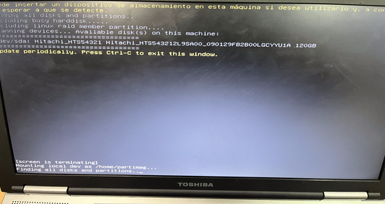
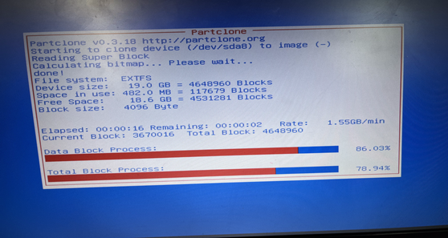

Local
1Primer paso
Elegir clonezilla live (VGA 800X600).
2Segundo paso
Elegir el idioma.
3Tercer paso
Mantenemos la distribucion de teclado por defecto.
4Cuarto paso
Iniciamos clonezilla.
5Quinto paso
Seleccionamos la opcion device-image.
6Sexto paso
Seleccionamos la primera opcion para usar el equipo local.
7Septimo paso
Clonezilla nos escaneara los dispositivos que tiene el dispositivo, tambien la unidad donde guardemos la imagen que vamos a crear.
8Octavo paso
Seleccionamos la particion donde queremos montar el /home/partimag para guardar la imagen.
9Noveno paso
Omitimos la comprobacion del sistema de archivos para que el proceso de creacion sea mas rapido.
10Decimo paso
Creacion del directorio /home/partimag.
11Undecimo paso
Seleccionamos el modo principiante.
12Doceavo paso
Seleccionamos la opcion savedisk para guardar una imagen del disco local.
13Treceavo paso
Introducimos el nombre que queremos para nuestra imagen.
14Decimocuarto paso
Seleccionamos el disco del que queremos crear la imagen.
15Decimoquinto paso
Omitimos la comprobacion para que el proceso de creacion sea mas rapido.
16Dieciseisavo paso
No ciframos la imagen.
17Diecisieteavo paso
Elegimos si queremos que cuando acabe el proceso de creacion el equipo se apague, se reinicie o nos deje elegir cuando finalice.
18Decimooctavo paso
Elegimos el dispotivo donde queremos que se guarde la imagen (Dispositivo donde creamos el /home/partimag anteriormente).
19Decimonoveno paso
Imagen creandose exitosamente.
